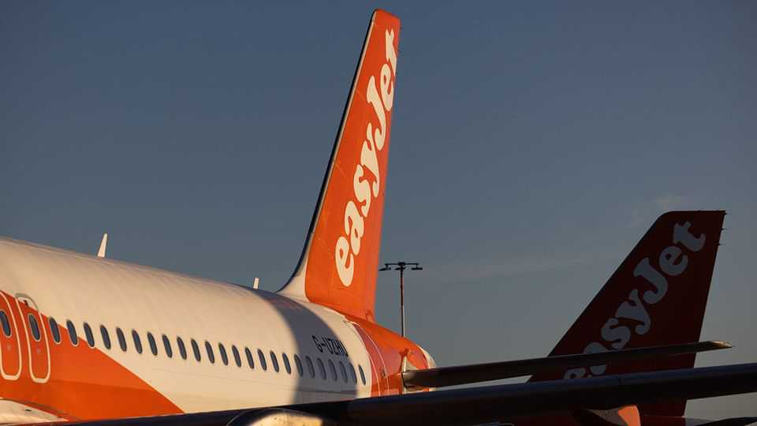

Why easyJet may be heading for a break-up
Its private-equity suitor may be looking to sell it for parts
June 25th 2026

Abudget airline’s purpose is to offer cheap air travel. But snapping one up for a bargain is another matter. On June 22nd, after weeks of rumoured interest, Castlelake, an American investment firm, went public with its offer to buy easyJet, a European low-cost carrier (lcc), for £4.7bn ($6.2bn), revealing that two lower offers had already been rebuffed. EasyJet accused Castlelake of trying to buy the airline “on the cheap”. It rejected the bid, and another, for £4.9bn, on June 25th. Yet it has said it will now start talks with its suitor.
The airline business is tough. Fierce competition means generally meagre profits, making unforeseen upheavals—such as the soaring cost of jet fuel resulting from America’s conflict with Iran—especially painful. Since the start of the year IATA, a trade body, has cut in half its forecasts for the global industry’s overall net profits and net margins, to $23bn and around 2%. Bankruptcies are frequent, such as the demise of Spirit, an American lcc, which went out of business in May.
The past financial performance of easyJet makes for pleasant reading against such a disagreeable background. Over the two financial years to September 2025 its annual revenue increased by around a quarter, to just over £10bn, with operating profits rising from £476m to £703m. More recently, however, the war in the Gulf has hit the airline hard. It relies heavily on European leisure travellers, many of whom have delayed booking holidays, forcing the airline to keep ticket prices low. The result is that Barclays, a bank, reckons on operating profits of just £107m this year. That is why, prior to rumours of Castlelake’s interest, easyJet’s share price was down by nearly a quarter from the start of the year.
Castlelake may not be looking to hold on to easyJet in its current form. It led a consortium that rescued sas, a Scandinavian carrier, from bankruptcy in 2023, but has agreed to sell out to Air France-klm, a partner in the deal, suggesting it is not seeking long-term ownership of an airline. It has other means of making money from aviation, and may be more interested in the “value trapped within easyJet”, says Alex Irving of Bernstein, a broker.
Castlelake’s leasing business manages hundreds of planes. The prospect of adding easyJet’s owned fleet of around 200 Airbus short-haul aircraft to its total may be motivating its acquisition attempt. The airline’s order book of 290 additional Airbus planes for delivery over the next eight years would also add to the appeal. These are valuable assets, given Airbus’s huge backlog of over 9,000 planes and perhaps a ten-year wait for new orders.
Castlelake may spy other opportunities too. Over the years easyJet has diverged from the ultra-low-cost strategies pursued by rivals such as Ryanair and Wizz Air by operating from more mainstream airports. As a result, it has amassed a portfolio of valuable landing slots that would appeal to Europe’s legacy carriers.
The airline has also built a thriving holiday business. Launched in 2019 to make use of a website that serves over 100m customers, some of whom may be interested in a package holiday, this business now accounts for over a third of pre-tax profits. Although it is hard to know what it would be worth if spun off, other European carriers with holiday businesses, such as British Airways or Jet2 may be interested.
EasyJet’s investors may well be tempted to accept an improved offer from Castlelake. Rumours suggest that raising the current one of £6.50 a share to anything over £7 might be enough. But Castlelake could also walk away. As Mr Irving of Bernstein notes, a break-up that could take a couple of years would be a “full-on task”. In a business as risky as aviation, where another big setback is as certain as it is unpredictable, dismantling easyJet for parts would be a brave manoeuvre. ■
To track the trends shaping commerce, industry and technology, sign up to “The Bottom Line”, our weekly subscriber-only newsletter on global business.